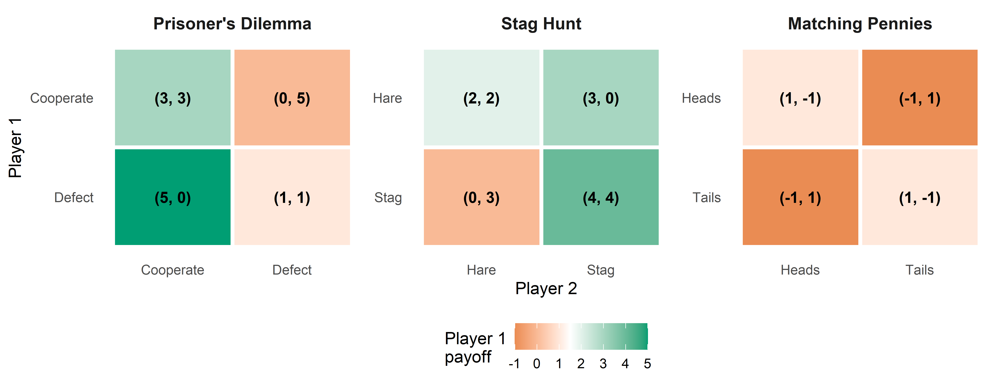

# Build a tidy data frame for a 2x2 payoff matrix
make_payoff_df <- function(game_name, row_actions, col_actions, payoffs) {
# payoffs: list of four pairs c(u1, u2) in row-major order
tibble(
game = game_name,
row_action = rep(row_actions, each = length(col_actions)),
col_action = rep(col_actions, times = length(row_actions)),
payoff_1 = map_dbl(payoffs, 1),
payoff_2 = map_dbl(payoffs, 2),
label = glue("({payoff_1}, {payoff_2})")
)
}3 What is a Game?
Abstract
Players, actions, payoffs, and information — the four building blocks that turn any strategic situation into a formal game. This chapter introduces the modeling stance of game theory, walks through canonical examples such as the Prisoner’s Dilemma, coordination, and zero-sum games, and implements a reusable payoff-matrix visualization in R.
Keywords
game theory, players, actions, payoffs, information, Prisoner’s Dilemma
4 What is a Game?
Learning objectives
After completing this chapter you will be able to:
- Identify the four core ingredients of a game: players, actions, payoffs, and information.
- Explain why a situation qualifies as a “strategic interaction” rather than a simple decision problem.
- Represent a simultaneous-move game as a payoff matrix and interpret its entries.
- Construct and visualize payoff matrices for classic 2x2 games in R.
- Distinguish between zero-sum, coordination, and social-dilemma games by inspecting their payoff structure.
4.1 Motivation
Imagine two coffee shops that open on the same street. Each owner must set a price without knowing the competitor’s choice. The profit of each shop depends not only on its own price but also on the price set by the other. This mutual dependence is the hallmark of a strategic interaction: the outcome for any one participant is shaped by the choices of all participants together.
Situations like this arise everywhere — in economics, politics, biology, computer science, and everyday life. Firms compete on pricing and advertising; countries negotiate treaties; bacteria evolve resistance; autonomous vehicles coordinate at intersections. What unites these disparate settings is a common logical structure that can be captured by a single word: game.
Game theory provides a precise mathematical language for reasoning about strategic interactions. It was launched by Neumann & Morgenstern (1944), who demonstrated that parlour games, market competition, and military tactics all share the same formal skeleton. A few years later, Nash (1950) showed that every finite game possesses at least one equilibrium — a combination of strategies from which no player wants to deviate unilaterally. These two contributions created a discipline that now spans the social sciences, biology, and artificial intelligence.
This chapter lays the foundation for everything that follows. Before we can solve games, simulate tournaments, or train learning agents, we need a clear vocabulary for describing what a game is.
4.2 Theory
4.2.1 The four building blocks
Following Osborne (2004), a game in strategic form is defined by four elements:
Players. A finite set \(N = \{1, 2, \ldots, n\}\) of decision-makers. Each player is assumed to be rational — they have well-defined preferences and act to maximize their own payoff.
Actions (strategies). For each player \(i\), a set \(A_i\) of available choices. In a simultaneous-move game every player chooses an action without observing what the others do. The set of all action profiles is \(A = A_1 \times A_2 \times \cdots \times A_n\).
Payoffs. A function \(u_i : A \to \mathbb{R}\) that assigns a numerical reward to player \(i\) for every possible combination of actions. Payoffs encode preferences: player \(i\) prefers action profile \(a\) to profile \(a'\) if and only if \(u_i(a) > u_i(a')\).
Information. What each player knows when choosing an action. In a simultaneous game, players choose without observing others’ moves; in a sequential game, later movers may observe earlier choices. We explore sequential information structures in Chapter 8.
A compact way to represent a two-player simultaneous game is the payoff matrix (also called the normal form). Each row corresponds to an action of Player 1, each column to an action of Player 2, and each cell contains a pair \((u_1, u_2)\) of payoffs. We study this representation in depth in Chapter 5.
4.2.2 What makes a situation a “game”?
Not every decision problem is a game. A hiker choosing a trail based on weather forecasts faces uncertainty, but the weather does not “respond” to the hiker’s choice. A game requires at least two purposeful agents whose payoffs are mutually dependent. This interdependence is the key criterion: if the best action for one player depends on the action chosen by another, the situation is strategic and thus a game (Shoham & Leyton-Brown, 2009).
4.2.3 Three canonical examples
The Prisoner’s Dilemma. Two suspects are interrogated separately. Each can Cooperate (stay silent) or Defect (betray the other). Mutual cooperation yields a moderate reward for both, mutual defection yields a poor outcome for both, and unilateral defection gives the defector a high payoff at the cooperator’s expense. The tragedy is that each player has a dominant incentive to defect, even though mutual cooperation would leave both better off. This game is central to the study of cooperation and is revisited in Chapter 10 and Chapter 20. The payoff structure is:
| Cooperate | Defect | |
|---|---|---|
| Cooperate | (3, 3) | (0, 5) |
| Defect | (5, 0) | (1, 1) |
Coordination (Stag Hunt). Two hunters can chase a Stag (which requires joint effort) or a Hare (which can be caught alone). If both hunt the stag, both feast; if one hunts alone, the stag escapes and that hunter gets nothing while the other catches a hare. The game has two pure-strategy equilibria and highlights the tension between efficiency and safety.
| Stag | Hare | |
|---|---|---|
| Stag | (4, 4) | (0, 3) |
| Hare | (3, 0) | (2, 2) |
Zero-sum (Matching Pennies). Each player secretly shows Heads or Tails. If the coins match, Player 1 wins; otherwise Player 2 wins. Every gain for one player is an equal loss for the other, so \(u_1(a) + u_2(a) = 0\) for every profile \(a\). This is the class of games Neumann & Morgenstern (1944) first solved completely. We study mixed-strategy solutions in Chapter 7.
| Heads | Tails | |
|---|---|---|
| Heads | (1, -1) | (-1, 1) |
| Tails | (-1, 1) | (1, -1) |
4.3 Implementation in R
We now build an R function to create and visualize any 2x2 payoff matrix. The function returns a tidy data frame suitable for plotting with ggplot2.
Next we build data frames for our three canonical games and combine them into one tidy dataset.
pd <- make_payoff_df(
"Prisoner's Dilemma",
c("Cooperate", "Defect"), c("Cooperate", "Defect"),
list(c(3, 3), c(0, 5), c(5, 0), c(1, 1))
)
stag <- make_payoff_df(
"Stag Hunt",
c("Stag", "Hare"), c("Stag", "Hare"),
list(c(4, 4), c(0, 3), c(3, 0), c(2, 2))
)
mp <- make_payoff_df(
"Matching Pennies",
c("Heads", "Tails"), c("Heads", "Tails"),
list(c(1, -1), c(-1, 1), c(-1, 1), c(1, -1))
)
games <- bind_rows(pd, stag, mp) |>
mutate(
game = factor(game, levels = c("Prisoner's Dilemma",
"Stag Hunt",
"Matching Pennies"))
)Now we produce a publication-quality heatmap of the three payoff matrices, using Player 1’s payoff for the fill colour.
p_heatmap <- ggplot(games, aes(x = col_action, y = row_action,
fill = payoff_1)) +
geom_tile(colour = "white", linewidth = 1.2) +
geom_text(aes(label = label), size = 3.6, fontface = "bold") +
facet_wrap(~ game, scales = "free") +
scale_fill_gradient2(
low = okabe_ito[6], # vermillion for negative/low
mid = "white",
high = okabe_ito[3], # bluish-green for positive/high
midpoint = 1.5,
name = "Player 1\npayoff"
) +
scale_y_discrete(limits = rev) +
labs(x = "Player 2", y = "Player 1") +
theme_publication(base_size = 11) +
theme(
strip.text = element_text(face = "bold", size = 11),
panel.grid = element_blank(),
axis.ticks = element_blank()
)
p_heatmap
4.4 Worked example
Let us walk through the Prisoner’s Dilemma step by step to cement the vocabulary.
Step 1 — Identify the players. There are two players: Suspect 1 and Suspect 2.
Step 2 — List the actions. Each player can Cooperate (stay silent) or Defect (betray). So \(A_1 = A_2 = \{\text{Cooperate}, \text{Defect}\}\).
Step 3 — Specify payoffs. We read the matrix row by row:
pd |>
select(
`Player 1` = row_action,
`Player 2` = col_action,
`Payoff 1` = payoff_1,
`Payoff 2` = payoff_2
) |>
gt() |>
tab_header(title = "Prisoner's Dilemma Payoffs") |>
cols_align(align = "center")| Prisoner's Dilemma Payoffs | |||
|---|---|---|---|
| Player 1 | Player 2 | Payoff 1 | Payoff 2 |
| Cooperate | Cooperate | 3 | 3 |
| Cooperate | Defect | 0 | 5 |
| Defect | Cooperate | 5 | 0 |
| Defect | Defect | 1 | 1 |
Step 4 — Check for dominance. Regardless of what Player 2 does, Player 1 earns more by defecting (5 > 3 when Player 2 cooperates; 1 > 0 when Player 2 defects). Defect is a dominant strategy for Player 1. By symmetry, the same holds for Player 2.
Step 5 — Identify the outcome. Both players defect, yielding payoffs (1, 1). This is the unique Nash equilibrium, yet both players would prefer mutual cooperation at (3, 3). The gap between individual rationality and collective welfare is what makes the Prisoner’s Dilemma so compelling — and why mechanisms for sustaining cooperation, from repeated interaction (Axelrod, 1981) to enforceable contracts, are among the central concerns of game theory.
4.5 Extensions
The four-element definition introduced here is deliberately minimal. Real-world strategic situations often involve richer structure:
- Sequential moves and information sets. When players move in turn and can observe some or all prior actions, we use the extensive form — a game tree that encodes timing and information. See Chapter 8.
- Mixed strategies. Players may randomize over actions. Neumann & Morgenstern (1944) proved that every finite zero-sum game has a value in mixed strategies; Nash (1950) extended the existence result to all finite games. We cover mixed strategies in Chapter 7.
- Incomplete information. When players are uncertain about others’ payoffs or types, we enter the realm of Bayesian games, treated in Chapter 9.
- Repeated interaction. Many strategic encounters happen repeatedly. Repetition can sustain cooperation even in Prisoner’s Dilemma settings, a theme explored in Chapter 10.
- Multi-agent learning. When agents learn from experience rather than computing equilibria analytically, game theory intersects with reinforcement learning (Sutton & Barto, 2018). We develop this connection in Chapter 28 and Chapter 29.
The compact representation we built in R — the make_payoff_df() function and heatmap visualization — will be extended in Chapter 5 where we study dominance, best responses, and iterated elimination of dominated strategies.
Exercises
Identifying game elements. Consider an intersection where two autonomous vehicles arrive simultaneously. Each can Go or Yield. If both go, they crash (payoff -5 each). If both yield, they waste time (payoff 0 each). If one goes and the other yields, the goer saves time (payoff 3) and the yielder waits (payoff 1). Write down the four elements (players, actions, payoffs, information) and construct the 2x2 payoff matrix. What type of game is this (zero-sum, coordination, or social dilemma)?
Payoff heatmap. Using the
make_payoff_df()function from this chapter, create a payoff matrix for the Battle of the Sexes game: two players choose between Opera and Football. Both prefer to coordinate, but Player 1 prefers Opera (payoffs 3, 2 when both choose Opera) and Player 2 prefers Football (payoffs 2, 3 when both choose Football). Miscoordination yields (0, 0). Plot the heatmap and describe the payoff structure.Zero-sum verification. Prove algebraically that Matching Pennies is zero-sum by showing \(u_1(a) + u_2(a) = 0\) for every action profile. Then modify the payoffs so that the game is not zero-sum but still competitive (Player 1 prefers matching and Player 2 prefers mismatching). Plot both versions side by side using
facet_wrap().From story to model. Pick a real-world scenario (e.g., two countries deciding whether to impose tariffs, two students deciding how much effort to put into a group project, or two streaming services choosing content investment levels). Identify the players, actions, and a plausible payoff structure. Use
make_payoff_df()to encode your game and produce the heatmap. Discuss whether the game resembles a Prisoner’s Dilemma, coordination game, or something else.Reading the literature. Read the first two pages of Nash (1950). In your own words, state Nash’s definition of an equilibrium point. How does it relate to the concept of a dominant-strategy outcome in the Prisoner’s Dilemma?
Solutions appear in Appendix E.
Axelrod, R. (1981). The evolution of cooperation. Science, 211(4489), 1390–1396. https://doi.org/10.1126/science.7466396
Nash, J. F. (1950). Equilibrium points in n-person games. In Proceedings of the National Academy of Sciences (Vol. 36, pp. 48–49). https://doi.org/10.1073/pnas.36.1.48
Neumann, J. von, & Morgenstern, O. (1944). Theory of games and economic behavior. Princeton University Press.
Osborne, M. J. (2004). An introduction to game theory. Oxford University Press.
Shoham, Y., & Leyton-Brown, K. (2009). Multiagent systems: Algorithmic, game-theoretic, and logical foundations. Cambridge University Press.
Sutton, R. S., & Barto, A. G. (2018). Reinforcement learning: An introduction (2nd ed.). MIT Press.